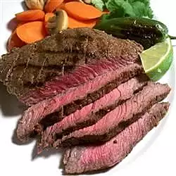

Steak

Description
Jalapenos mixed with the other ingredients give a spicy and delicious kick to grilled steak. Marinate this steak
in the fridge for up to 24 hours before cooking.
Ingredients
- 4 jalapeno peppers, stemmed
- 4 cloves garlic, peeled
- 1½ teaspoons cracked black pepper
- 1 tablespoon coarse salt
- ¼ cup lime juice
- 1 tablespoon dried oregano
- 1½ pounds top sirloin steak